MinecraftBE - ストラクチャ錬金術のやり方
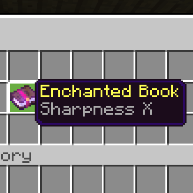
目次は右上の「≡」から！
エクスポートしたストラクチャのデータをいじってストラクチャを書き換えます。
簡単のために、チェストに生贄となるアイテムだけを入れ、
そのアイテムのデータを書き換えて別のアイテムにしたりすることが多いのでストラクチャ錬金術と呼んでいます笑
はじめに
注意事項が2点あります。
・ストラクチャブロックから.mcstructureファイルをエクスポートできることが前提
windows10版なら問題なくできると思いますが、Androidは最近アップデートでできるようになっていて機能は備わってるはずなので
リソースパックを使ってボタンを出せばできると思います。
・ストラクチャを別ワールドに持っていく方法を知っている/できる前提
ビヘイビアパックを使います。エクスポートした.mcstructureファイルをstructuresフォルダに入れて作る、これ以上の説明はしません。
オーバーエンチャント
1. エンチャント本を用意
チェストにエンチャント本を一つだけ入れます。他にいろいろ入っていてもいいですが、後で大変になるので1個だけにしておきます。
今回は後で分かりやすいようにレベル5を選んでおきました。
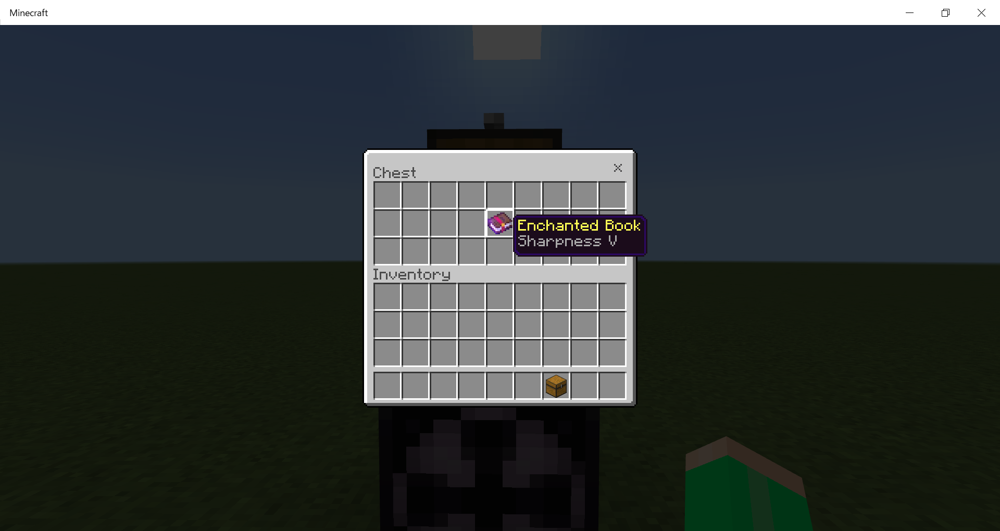
2. ストラクチャをエクスポート
ストラクチャの範囲もできればチェストだけを選択します。分かりやすい名前をつけてエクスポートします。
再起動が必要なので、終わったらゲームは閉じてください。
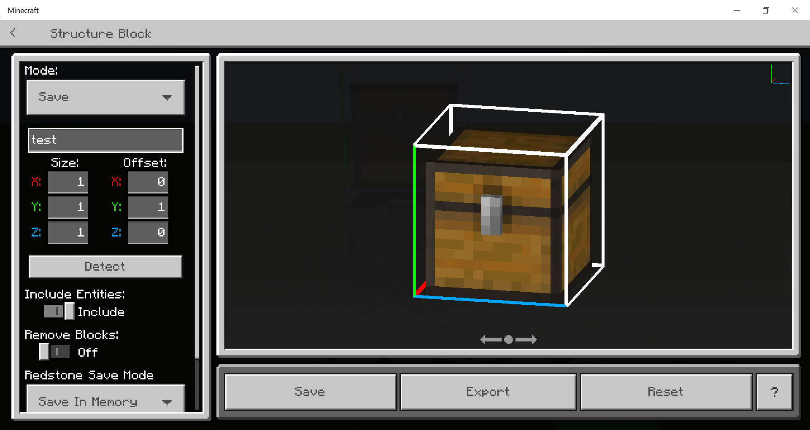
3. バイナリエディタ
「binary editor online」と検索して出てくるHexEd.itというところへ行きます。
そこで、左上の「ファイルを開く」ボタンから先ほどのストラクチャファイルを開きます。
4. お目当ての値を探す
右の羅列から「minecraft:enchanted_book」からの「lvl」を気合いで探します(別に左のところから検索してもいいです)。
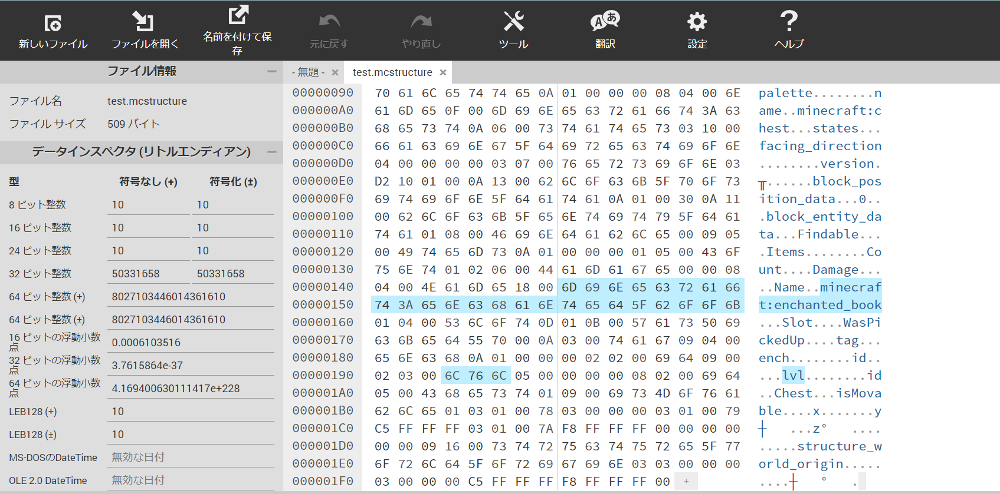
5. 値を書き換える
今回は、エンチャントはレベル5でしたね。たしかに「lvl」の右隣の点を真ん中の16進数表示で見ると「05」になっていますね。
16進数表示の「05」の部分をクリックして自分好みの値を2桁の16進数で入力します。
(ゲームの仕様では上限はもっと上ですが、16進数2桁以上(レベル255以上)はまだよくわかってないです)
→
16進数の計算
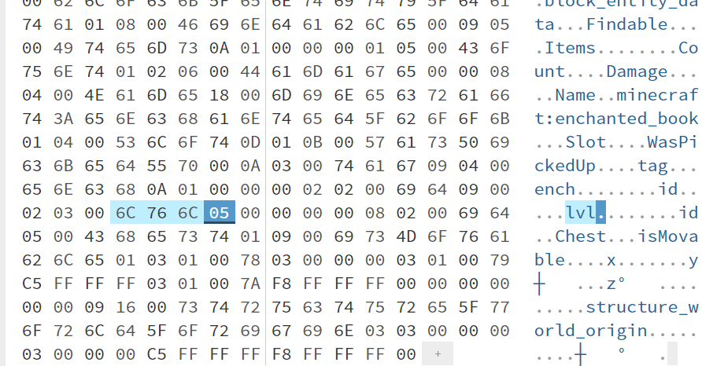
今回はMAXの「FF(=255)」にしました。
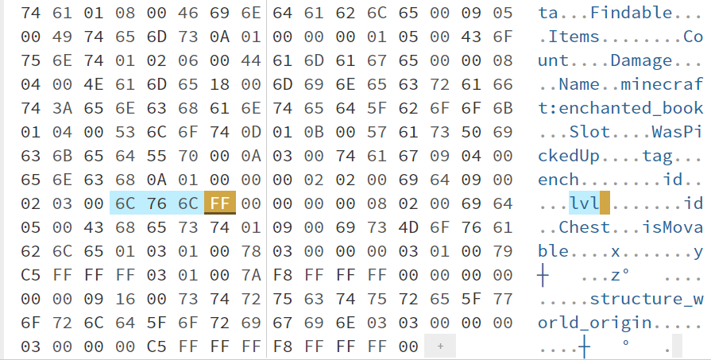
6. ストラクチャデータを保存
左上の「名前をつけて保存」ボタンから保存してください。ファイルの名前がストラクチャの名前になります。
7. ストラクチャを呼び出す
今回編集したストラクチャデータが入ったビヘイビアパックを適用してワールドに入ります。
ファイル名が「〇〇.mcstructure」なら、「mystructure:〇〇」でストラクチャをロードします。
「ロード」ボタンが押せるようになっていたら成功です！
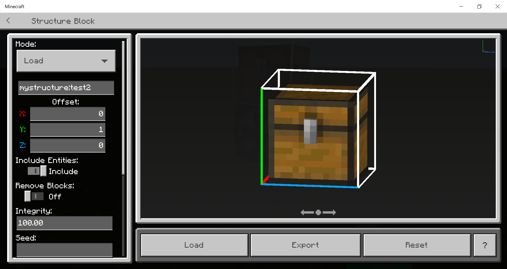
8. チェストの中身を確かめる
ここでチェストの中身がカラになっていても失敗ですね......
成功すればこのように、指定した通りのレベル255エンチャントに変わっています！

オリジナルのランダムチェスト
1. 野良チェストを捕まえる
適当に捨てワールドを作って、自然に生成されるチェストのストラクチャを取ります。そこで、絶対にチェストは開けてはいけません！
探すときには/locateコマンドとかを使って村などを探せばいいと思います。
もしよければ......撮影用に作ったワールドでリスポーン地点に壊れたポータルがあったやつ：シード値「-1004730175」
2. ストラクチャをエクスポート
ストラクチャの範囲もできればチェストだけを選択します。分かりやすい名前をつけてエクスポートします。
再起動が必要なので、終わったらゲームは閉じてください。

3. バイナリエディタ
「binary editor online」と検索して出てくるHexEd.itというところへ行きます。
そこで、左上の「ファイルを開く」ボタンから先ほどのストラクチャファイルを開きます。
4. お目当ての値を探す
右の羅列から「minecraft:chest」からの「LootTable」からの「loot_tables/chests/〇〇.json」を気合いで探します
(別に左のところから検索してもいいです)。
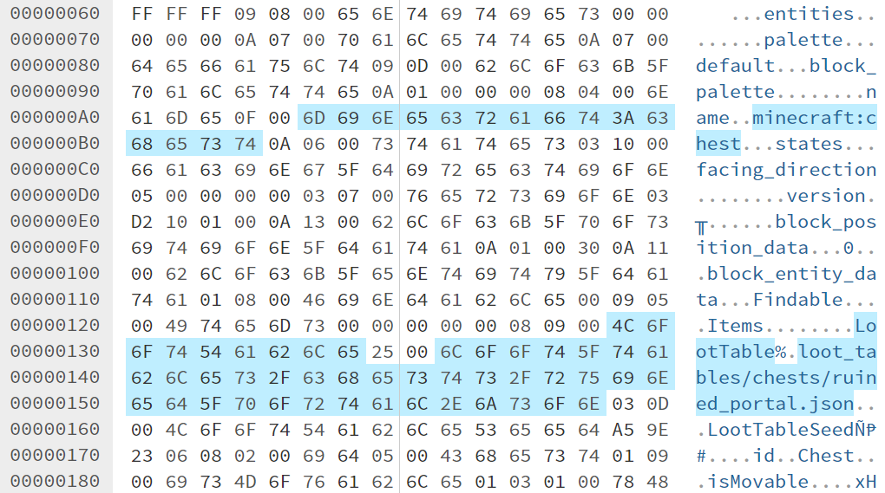
5. シード値を消す
自然生成するチェストにはシード値が設定されており、同じワールドのシード値で同じチェストの中身が出るようになっています。
とにかく、これがあると中身が固定されてしまうので消します。消すのはこの部分です(「i」は消しません)。
すぐ後の「id」から3つの点(16進表示で08,02,00)の一番左(08)をクリックしてBackSpaceで消します。
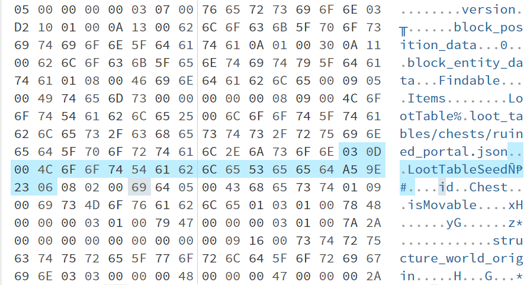
ちょっとクセのある消え方なので気を付けてください。間違えたら「元に戻す」ボタンが使えます。
以下の画像のように、「～json...id～」(点3つは16進で08,02,00)となれば正解です。
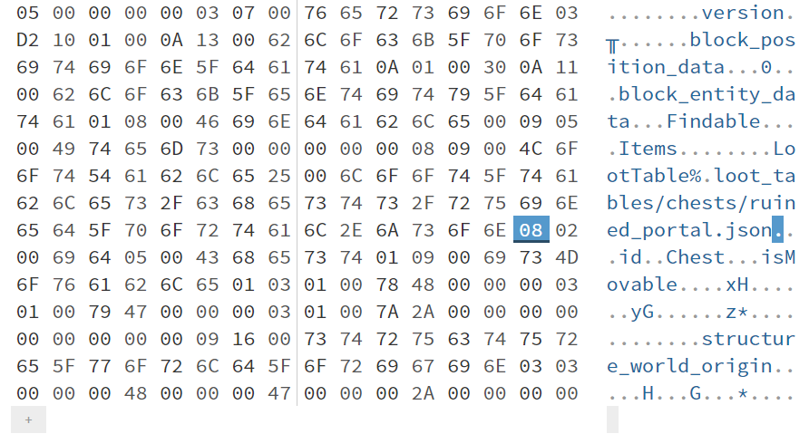
6. ルートテーブルを変える
そしてこのルートテーブルを自分のお好みのルートテーブルに変えます。
入力したぶん値が書き変わるという仕様になっているので、こちらもまたクセのある入力方法に注意して下さい。
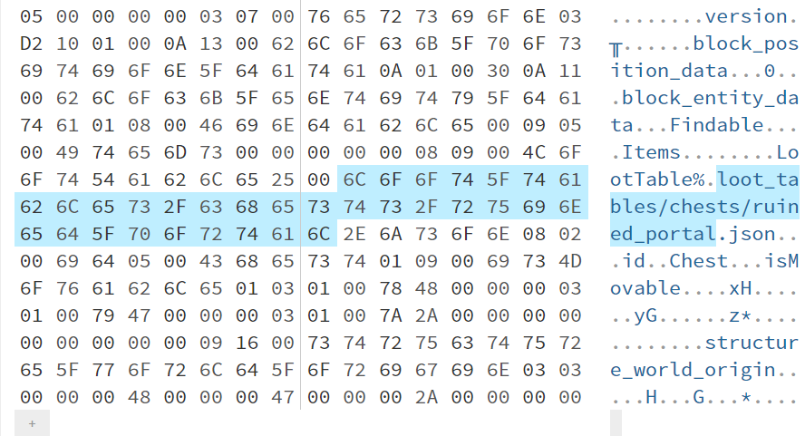
さっそくオリジナルのルートテーブルにしてみます。
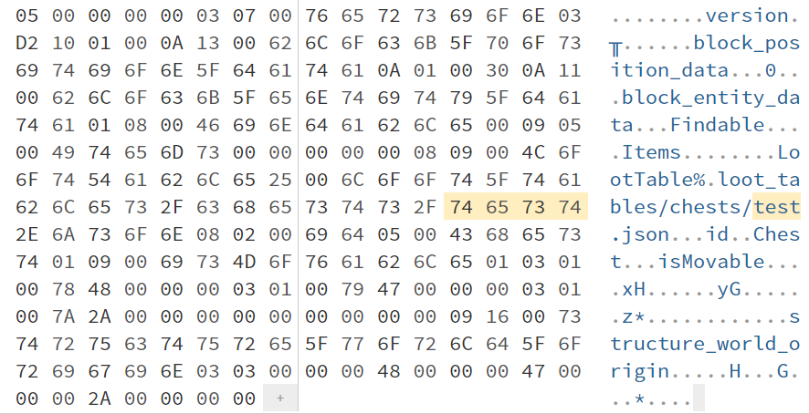
6'. 文字数が増える場合
文字数が増える場合は、文字を挿入したいところを右クリックして一番上の「Insert byte here...」をクリックします。
出てきたウィンドウでは「バイト数」に追加したい文字数を入力して「適用」を押します。
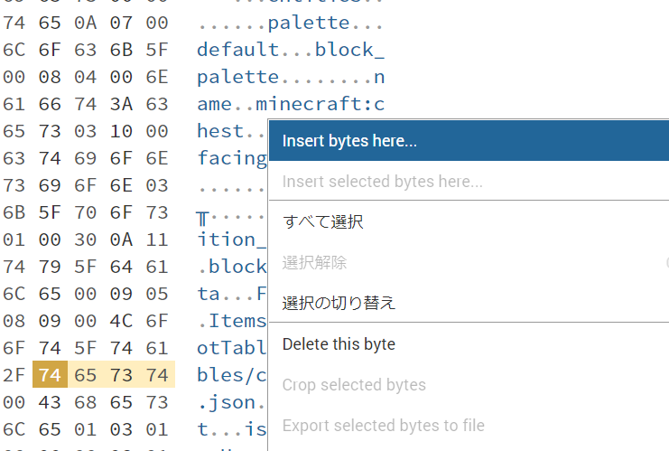
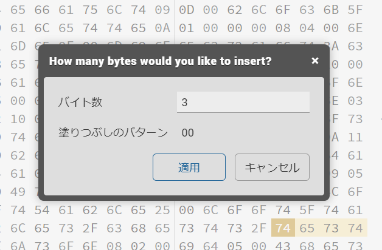
7. 文字数指定
バイナリファイルでは、文字列にはどこまでが文字列か知るために文字数が値の前に書いてあるようです。
いま書き換えた部分のちょっと前にある「LootTable」の直後のこの数字(16進表示)を編集します。
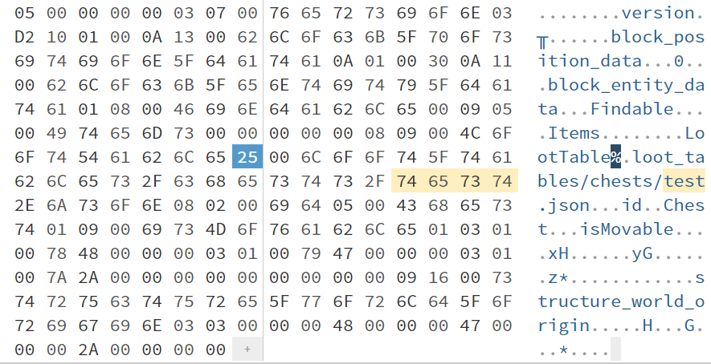
お手本の場合、変える前のルートテーブルのパスは「loot_tables/chests/ruined_portal.json」だったので、37文字です。
これを16進に直すと「25」になるので、上記の画像が選択している部分の数と確かに一致しますね。
→
16進数の計算
37 ÷ 16 = 2 あまり 5
よって, 25
このように指定したルートテーブルのパスの文字数を数えてここに入力します。
16進に変えて3桁以上になる場合はまだよく分かってないので、255文字以内にしてください。
お手本では「loot_tables/chests/test.json」に変えたので、28文字で「1C」に変えます。
28 ÷ 16 = 2 あまり 12
12 → C より, 1C
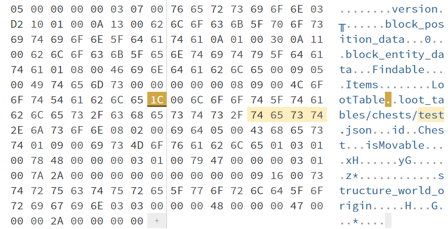
8. ストラクチャデータを保存
左上の「名前をつけて保存」ボタンから保存してください。ファイルの名前がストラクチャの名前になります。
9. ストラクチャを呼び出す
今回編集したストラクチャデータが入ったビヘイビアパックを適用してワールドに入ります。
ファイル名が「〇〇.mcstructure」なら、「mystructure:〇〇」でストラクチャをロードします。
「ロード」ボタンが押せるようになっていたら成功です！
10. チェストの中身を確かめる
ここでチェストの中身がカラになっていても失敗ですね......
成功すればこのように、指定した通りのルートテーブルに変わっています！
ロードモードのストラクチャブロックの隣にボタンを置くと、押すたびに中身が変わるのも確かめられると思います！
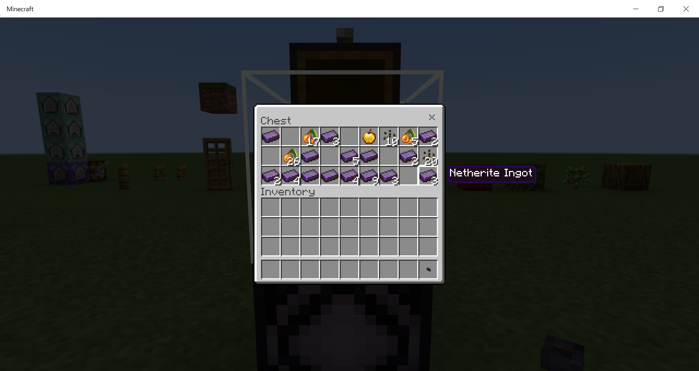
16進数の計算
ここでは10進数(整数) → 16進数の変換を計算する方法を紹介します。別に変換する電卓とか使ってもいいんですけどね。
先に例を上げておきます。
5 → 5 10 → A 19 → 13
255 → FF 12345 → 3039 999 → 3E7
たぶん16進数2ケタ分(10進数255まで)しかほとんどいらないと思うので、分けて説明します
255以下の数を16進数に変換する
まず、0~15の数を変換するとこうなります。
16以上255以下の数に関しては、少し計算をします。
この□と〇をそれぞれ上の表にしたがって変換して□〇の順でつなげるだけです。
例) 123を変換： 123 ÷ 16 = 7 あまり 11
7 → 7, 11 → B より, 7B
まあ──暗算は微妙でしょうね。
255より大きい数(一般化)
(またいつか書きます)